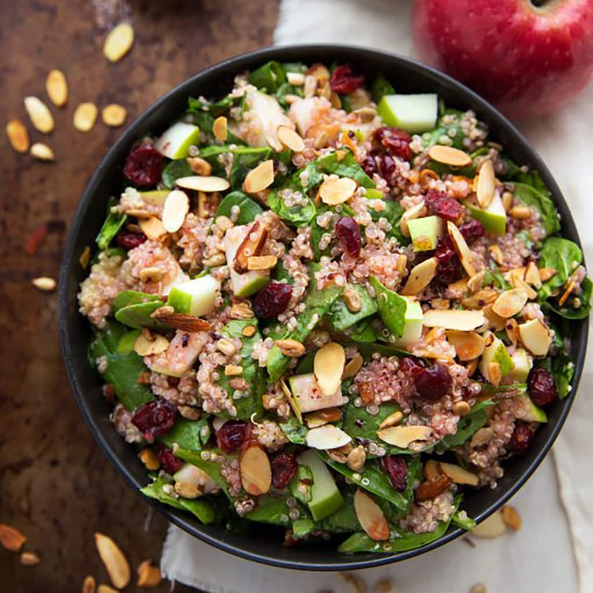

Quinoa Salad

Quinoa Salad Benefit
Some people with gluten intolerance, including those with celiac disease and non-celiac gluten sensitivity, need to avoid foods containing gluten.
People following a gluten-free diet need to choose gluten-free alternatives to gluten-containing grains like wheat, barley, and rye.
Quinoa is naturally gluten-free and makes a nutritious choice for people who want to or need to cut gluten from their diet.
Unlike gluten-free products made with refined ingredients, quinoa is a good source of nutrients that gluten-free diets often lack, like:
- fiber
- folate
- zinc
- magnesium
Ingredients
- 4 cups water
- 1 (12 ounce) box quinoa
- 3 carrots, chopped
- 1 cup corn
- 1 cup peas
- 1 cup chopped broccoli florets
- ¼ cup extra-virgin olive oil
- ¼ cup lemon juice
- 1 teaspoon chili powder
- ¼ teaspoon cayenne pepper
Directions
- Bring water and quinoa to a boil in a saucepan. Reduce heat to medium-low, cover, and simmer until quinoa is tender and water has been absorbed, 15 to 20 minutes.
- Place a steamer insert into a saucepan and fill with water to just below the bottom of the steamer. Bring water to a boil. Add carrots, corn, peas, and broccoli to steamer; cover, and steam until tender, 5 to 10 minutes.
- Mix quinoa and vegetable mixture together in a bowl.
- Whisk olive oil, lemon juice, chili powder, and cayenne pepper together in a bowl; pour over quinoa mixture and toss to coat.
Back to top
Back to Home Page